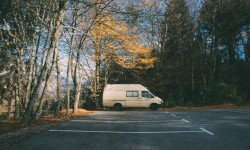
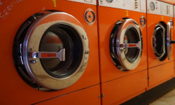

Parking
Stołówka
Pralnia
Lodziarnia
Pomost
- 

- 
- Zacienione miejsce w którym twój samochód może się zrelaksować po ciężkiej przejażdżce
- To tutaj możesz skosztować przepysznego śniadania lub objado-kolacji.
- Brudne ciuchy? Dla naszych automatów to nie problem!
- Pyszne lody nad jeziorem w upalny dzień. Czy można chcieć więcej?
- Nie ma to jak wieczorny spacer po starym pomoście. A może by tak wypożyczyć kajak?